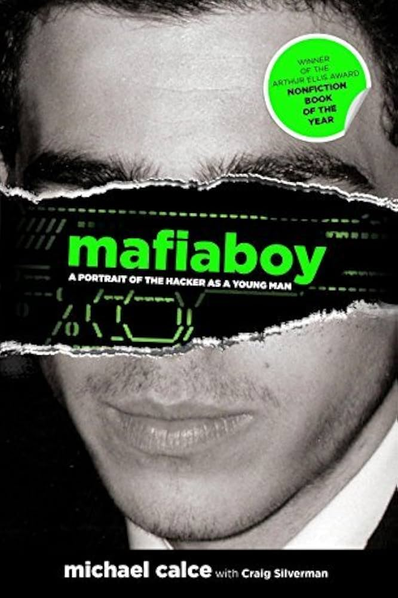

A lo largo de las últimas décadas, ciertos hackers han alcanzado notoriedad mundial por sus impactantes ataques, revelando las vulnerabilidades de los sistemas digitales más sofisticados. Desde robos masivos de información personal hasta la alteración de sistemas gubernamentales, estos 15 atacantes han dejado una marca indeleble en la historia de la ciberseguridad. En este artículo, repasamos quiénes son, qué ataques perpetraron y cómo cambiaron la forma en que vemos la seguridad en línea.
Kevin Mitnick
Uno de los hackers más notorios, realizó intrusiones en sistemas de grandes empresas y agencias gubernamentales usando ingeniería social y técnicas avanzadas. Usaba estas técnicas para obtener contraseñas y acceso a sistemas protegidos. Inició sus ataques con phreaking telefónico en 1978. Ingeniería social: es una técnica que los ciberdelincuentes utilizan para manipular a las personas con el fin de obtener información confidencial o acceso a sistemas restringidos. En lugar de atacar directamente los sistemas tecnológicos, los atacantes se enfocan en engañar a las personas para que proporcionen voluntariamente información como contraseñas, números de tarjetas de crédito, datos personales o credenciales de acceso. Phreaking telefónico: es un método para manipular y explorar los sistemas telefónicos con el fin de hacer llamadas sin costo o utilizar servicios que usualmente requieren autorización o pago. El término surgió en los años 70, cuando los llamados "phreakers" encontraron formas de engañar a los sistemas telefónicos mediante el uso de tonos específicos, permitiéndoles acceder a servicios de larga distancia sin pagar.
Gary McKinnon
Accedió a sistemas militares de EE.UU. buscando información sobre ovnis, considerado el mayor hackeo militar. Usaba un “script Perl” que buscaba contraseñas que tuvieran cero caracteres, es decir, computadoras en las que la contraseña por defecto no había sido cambiada.
El ataque realizado se considera como ataque de fuerza bruta el cual consiste en un método que los ciberdelincuentes utilizan para descifrar contraseñas, nombres de usuario o claves de cifrado probando todas las combinaciones posibles hasta encontrar la correcta. Este tipo de ataque se basa en la repetición y en la potencia de procesamiento de las computadoras para generar y probar miles o millones de combinaciones rápidamente.
Albert Gonzalez
Lideró un grupo que robó millones de números de tarjetas de crédito mediante ataques a minoristas y sistemas de pago. González junto con sus cómplices usaron un método de infiltración de código SQL, que utilizaron para abrir la puerta trasera de varios sistemas corporativos para que el paquete enviado pudiera inspeccionar los archivos (específicamente, los ARP Spoofing). Este ataque le permitió entrar y robar todos los datos internos que quería de la empresa.
El ataque usado es conocido como inyección SQL es un ataque que consiste en que el atacante manipula las consultas de una base de datos mediante la inserción maliciosa de código SQL en una entrada de usuario de una aplicación web. El objetivo de este ataque es acceder, modificar o eliminar información de una base de datos sin autorización.
Este ataque ocurre cuando una aplicación no hace una validación o filtración correctamente de las entradas proporcionadas por el usuario, lo que permite que el atacante inserte comandos SQL maliciosos.
Adrian Lamo
Conocido como el "hacker vagabundo", penetró en los sistemas de empresas como The New York Times y reveló información sobre Chelsea Manning y WikiLeaks.
Se dedicaba a infiltrarse a las redes de diferentes empresas para encontrar fallos e informarles al respecto; entre las empresas a las que logró acceder son The New York Times, Microsoft, Yahoo y Bank of America.
En la mayoría de sus ataques se aprovechaba de la mala configuración de servidores proxy de las empresas, lo que le permitía acceder a la red interna de las empresas.
Los servidores proxy actúan como intermediarios entre un dispositivo y el sitio web o servicio al que se desea acceder. Cuando se usa un proxy, las solicitudes de conexión realizadas pasan primero por el servidor proxy, el cual las reenvía al destino final. Luego, el proxy recibe la respuesta del sitio web o servicio y la envía de vuelta al dispositivo.
Lamo aprovechaba agujeros de seguridad de los servidores proxy para infiltrarse y obtener información de las empresas.
Anonymous
Colectivo de hacktivistas que ha realizado ataques DDoS y filtraciones de datos contra gobiernos y corporaciones en defensa de la libertad de información.

Los ataques de DDos se presentan cuando se realizan una serie de peticiones HTML con la finalidad de interrumpir parcial o totalmente servidores web, estos son generados principalmente por bots o botnet (computadoras infectadas con malware) que son utilizadas para este tipo de propósitos.
La filtración de datos se refiere al incidente en el que información confidencial o sensible se expone, se accede o se distribuye sin autorización, ya sea intencionalmente o por error. Este tipo de fuga puede incluir datos personales, financieros, de propiedad intelectual o información clasificada de una empresa.
LulzSec
Grupo que atacó sitios web gubernamentales y corporativos por diversión y para exponer vulnerabilidades. Este grupo se dedica al hacktivismo el cual consiste en utilizar técnicas de hacking con el objetivo de promover causas políticas, sociales o ideológicas. Los hacktivistas realizan ataques cibernéticos para llamar la atención sobre injusticias, expresar descontento o protestar contra gobiernos, corporaciones o instituciones.
Los métodos empleados pueden incluir ataques DDoS (denegación de servicio), defacement (modificación de páginas web), filtración de datos confidenciales o la creación de campañas de concienciación.
Jeanson James Ancheta
Especializado en botnets, fue arrestado por controlar miles de computadoras zombis para ataques y spam.
Una botnet es una red de ordenadores o dispositivos infectados con malware que están bajo el control de un único atacante, conocido como "bot-herder". Esta red de máquinas zombis se utiliza para llevar a cabo diversas actividades maliciosas, como ataques de denegación de servicio distribuido (DDoS), robo de datos y minería de criptomonedas.
Una vez que los dispositivos forman parte de la botnet, el atacante puede controlarlos de manera remota sin el conocimiento de los usuarios. Las botnets se utilizan para llevar a cabo actividades maliciosas como:
-
Ataques DDoS: inundan sitios web o servicios en línea con tráfico masivo para dejarlos fuera de servicio.
-
Envío masivo de spam: utilizan los dispositivos infectados para enviar correos electrónicos no deseados.
-
Robo de datos: recopilan información confidencial de los dispositivos infectados.
-
Distribución de malware: propagan virus y otros programas dañinos.
Kevin Poulsen
En los años 80 y principios de los 90, Poulsen hackeó sistemas telefónicos para manipular líneas de concursos de radio y asegurarse la victoria. Uno de sus actos más famosos fue ganar un Porsche manipulando un concurso de una estación de radio de Los Ángeles.
También accedió a bases de datos del FBI y otros sistemas policiales. Se le atribuyen numerosos actos de hackeo que involucraban la interceptación de líneas telefónicas y la manipulación de telecomunicaciones.
Jonathan James (c0mrade)
Jonathan James fue el primer menor de edad condenado por delitos de cibercrimen en Estados Unidos. A los 15 años, accedió a sistemas sensibles del Departamento de Defensa de los EE.UU. y la NASA. Robó software valorado en aproximadamente 1,7 millones de dólares, incluido código utilizado en la Estación Espacial Internacional.
Uno de los ataques que utilizó es un backdoor o puerta trasera; este es un tipo de software o mecanismo que permite el acceso no autorizado a un sistema, programa o red informática, eludiendo las medidas de seguridad establecidas. Los atacantes utilizan los backdoors para obtener el control de un equipo o sistema infectado de manera remota, permitiéndoles realizar diversas acciones sin ser detectados, como la ejecución de comandos, el robo de datos o la instalación de más software malicioso.
Guccifer 2.0
Guccifer 2.0 fue el alias utilizado por una entidad o individuo responsable de hackear y filtrar correos electrónicos del Comité Nacional Demócrata (DNC) durante la campaña presidencial de Estados Unidos en 2016. Se cree que Guccifer 2.0 estaba vinculado a la inteligencia militar rusa (GRU).
Publicó documentos robados a través de WikiLeaks y otras plataformas, influyendo en la percepción pública durante las elecciones.
Marcus Hutchins (MalwareTech)
Hutchins se hizo famoso por detener el devastador ataque del ransomware WannaCry en 2017, que afectó a miles de organizaciones en todo el mundo, incluida la infraestructura crítica del Reino Unido.
El ransomware es un software malicioso que bloquea el acceso a un sistema informático hasta que se pague un rescate. Normalmente, se exige el pago en criptomonedas como Bitcoin o Monero. Los hackers mantienen la clave para descifrar archivos a cambio de un pago. Esta amenaza de malware utiliza el cifrado a nivel de disco que causa mucho más daño que los ataques basados en archivos individuales.
Michael Calce (Mafiaboy)
En el año 2000, con solo 15 años, Calce lanzó una serie de ataques DDoS que derribaron sitios web importantes como Yahoo!, CNN, eBay y Amazon. Los ataques demostraron las vulnerabilidades de internet, especialmente en términos de infraestructura.
Un ataque de Denegación de Servicio (DoS) implica el envío masivo de solicitudes a un objetivo, superando su capacidad de respuesta y obligando al servidor a detener el servicio, lo que interrumpe el funcionamiento del sitio afectado durante un período determinado. La duración de un ataque de DoS puede variar y, en algunos casos, impactar en varios sitios al mismo tiempo. Además, un ataque se convierte en un ataque de Denegación de Servicio Distribuido (DDoS) cuando se lleva a cabo desde múltiples computadoras o diferentes fuentes en lugar de una sola.
Ehud Tenenbaum (The Analyzer)
Hacker israelí, se hizo famoso en 1998 por liderar un ataque cibernético contra el Pentágono y otras agencias gubernamentales de EE.UU., así como instituciones académicas.
De acuerdo con una investigación del FBI, Tenenbaum fue el líder de una serie de ataques dirigidos a empresas en varios países, como Holanda, Rusia, Turquía, Bélgica, Suecia y Estados Unidos. Se calcula que los ciberdelincuentes involucrados en estos ataques lograron sustraer aproximadamente 10 millones de dólares.
Albert Subirats
Conocido por su participación en actividades de phishing y estafas en línea, engañando a usuarios desprevenidos para robar sus credenciales y realizar fraudes financieros. Sus actividades afectaron a numerosas víctimas en todo el mundo.
Phishing: ciberataque en el que los delincuentes se hacen pasar por personas o empresas conocidas para robar información personal, como contraseñas o datos de tarjetas de crédito. Utilizan correos electrónicos, mensajes de texto o llamadas telefónicas para dirigir a las víctimas a sitios web falsos o para solicitar información confidencial.
Syrian Electronic Army
Grupo de hackers que apoya al gobierno sirio, encabezado por Bashar al-Assad. Desde su formación, ha llevado a cabo ciberataques contra medios de comunicación, organismos gubernamentales y organizaciones humanitarias.
Utilizan principalmente técnicas de phishing y defacement (modificación no autorizada de sitios web), y han comprometido redes sociales y sitios web de organizaciones como The Associated Press y The Guardian, entre otros.